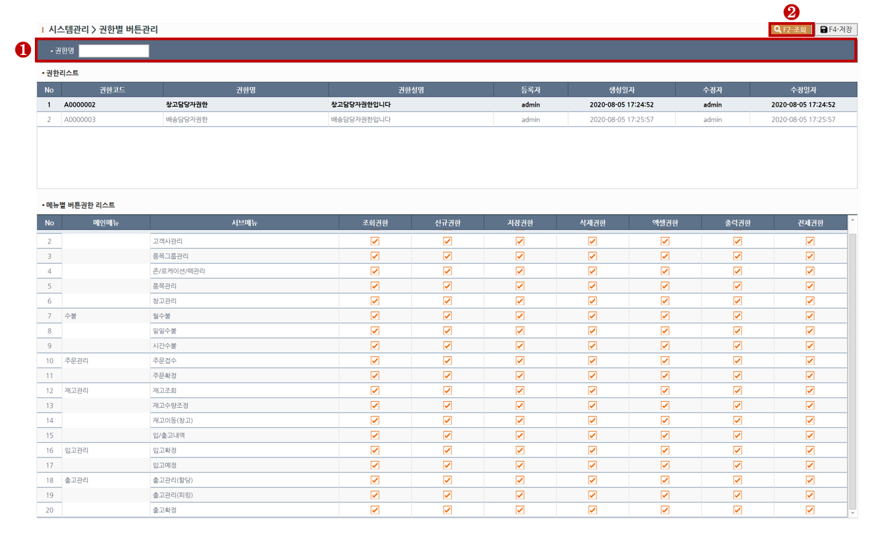
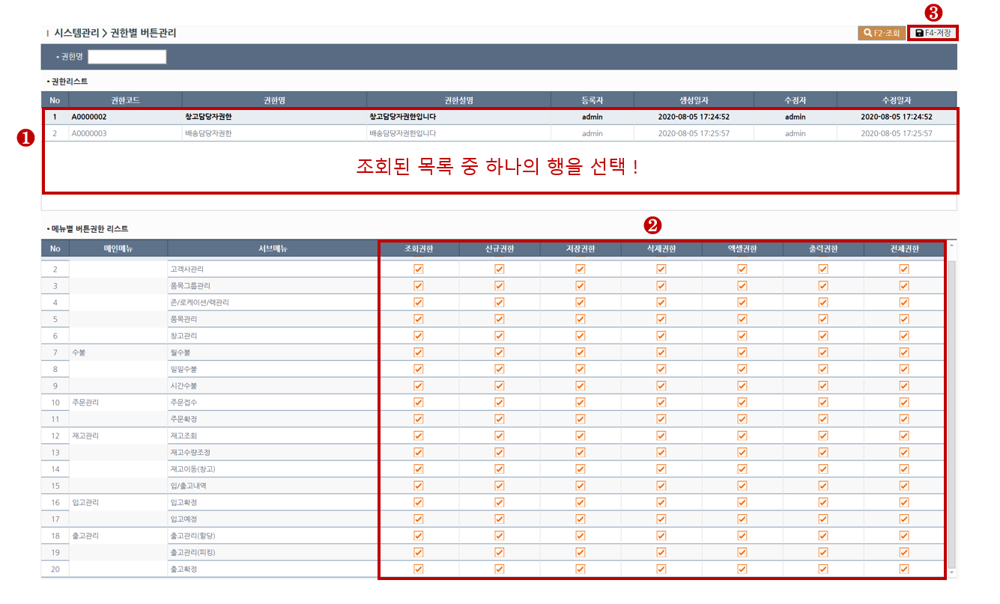

<div class="intro">
	<h2 class="az-content-title mg-b-20 tx-bold">권한별 버튼관리</h2>
	<p class="mg-b-20">
	권한별 버튼에 대한 권한을 설정하는 화면입니다.<br>
	동일한 화면이라도 사용자마다 버튼에 대한 권한을 설정할 수 있으며 최초상태는 모든 버튼권한이 부여된 상태입니다.<br>
	</p>
</div>

<div id="rgb-system2-content1">
	<div class="az-content-label mg-b-5">1. 조회하기</div>
	<small>
		<span class="tx-primary tx-bold"> > STEP-1</span> 조회목록의 필터링을 원하실땐 조회조건을 입력합니다. <br>
		<span class="tx-success tx-bold"> > STEP-2</span> 상단의 조회(F2)버튼을 클릭하여 조회합니다. <br>
	</small>
	
	<div class="mg-t-25">
    	
    </div>
</div>

<hr class="mg-y-40">

<div id="rgb-system2-content2">
	<div class="az-content-label mg-b-5">2. 버튼권한 설정하기</div>
	<small>
		<span class="tx-primary tx-bold"> > STEP-1</span> 조회된 "권한리스트" 그리드에서 행을 선택합니다. <br>
		<span class="tx-warning tx-bold"> > STEP-2</span> 행을 선택하면 하단의 그리드에 해당 권한에 부여된 메뉴목록이 나타나며 조회,신규,저장,삭제,엑셀,출력 필드에 체크 또는 체크해제하여 버튼권한을 설정합니다.<br> 
		※ 체크는 버튼을 활성화한다는 의미고, 체크해제는 버튼을 비활성화한다는 의미입니다.<br>
		※ 그리드의 [전체]필드를 체크할경우 모든 버튼권한이 체크처리되며, 체크해제할 경우 모든 버튼 권한이 체크해제처리됩니다.<br>
		<span class="tx-success tx-bold"> > STEP-3</span> 버튼권한 설정이 완료되었으면 상단의 저장(F4)버튼을 클릭하여 저장합니다. <br>
	</small>
	
	<div class="mg-t-25">
    	
    </div>
</div>
